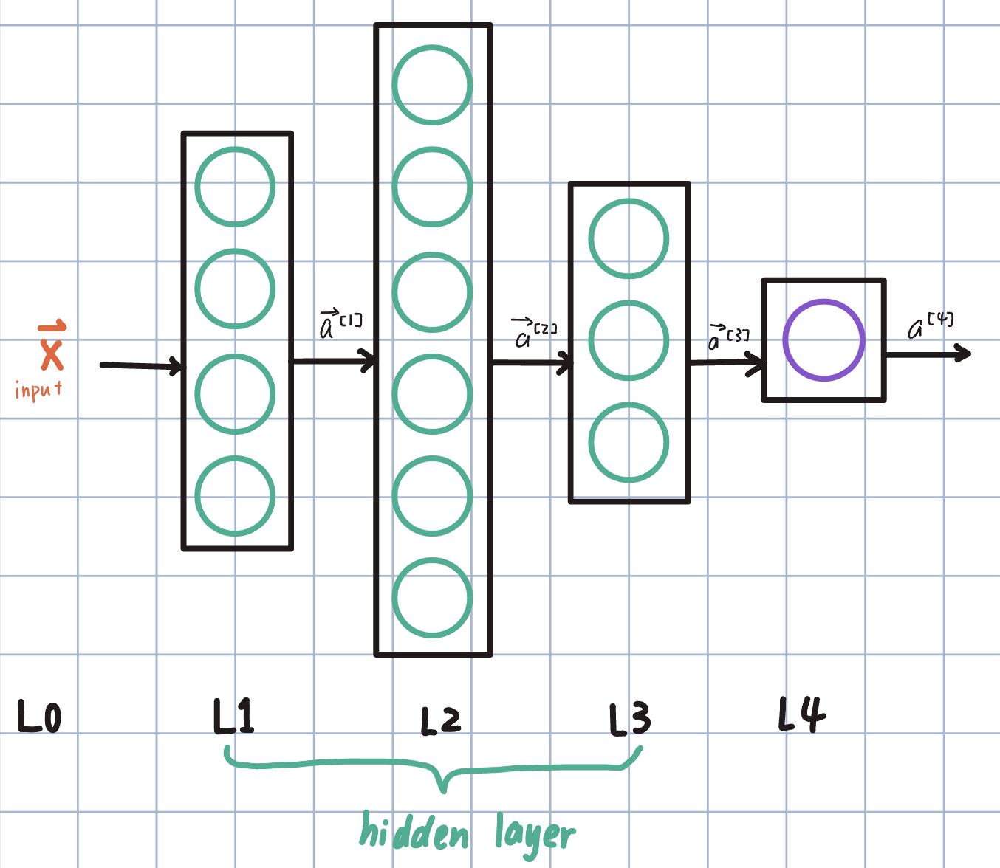
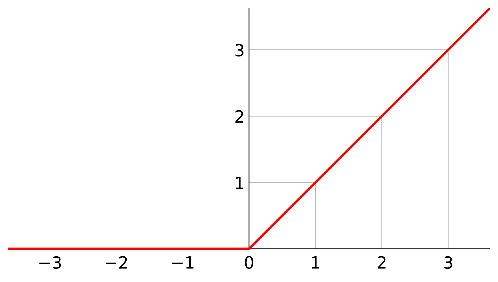

吴恩达机器学习
0 Intro
机器学习可以被分为 监督学习 & 无监督学习 两大类：
我们暂时不讨论 强化学习 等话题
-
Supervised Learning 监督学习
Learns from being given "right answers". (有标签)
-
Regression 回归: Predict a number from infinitely many possible outputs.
-
Classification 分类: Predict categories from small number of possible outputs.
-
-
Unsupervised Learning 无监督学习
Find patterns in unlabeled data. (无标签)
-
Clustering 聚类: Group similar data points together.
-
Anomaly Detection 异常检测: Find unusual data points.
-
Dimensionality Reduction 降维: Compress data using fewer numbers.
-
-
Transfer Learning 迁移学习：
使用在其他数据集上 训练好的模型 （别人那薅来的）解决新的任务
- Supervised Pretraining：在 较大 的数据集上训练 所有 参数
-
Fine Training：在 较小 的数据集上对参数进行微调
- Option A: 只调整 Output Layer 的参数
- Option B: 调整所有参数
背后的原理是：在 CV 任务中，前几层可能都在学习 edge，corner，curve 这类基本的 · 具有共性的特征
更加先进的机器学习算法包括：
-
Neural Networks 神经网络
- 您可以直接使用他人训练好的神经网络模型进行 推理 inference / prediction
- 也可以自行 训练 traning
-
Decision Trees 决策树
Terminology 术语表
| Word | Desc. |
|---|---|
| Training Set 训练集 | 用于 训练 模型的数据 |
| \(X\) 输入变量 | Input Variable Feature |
| \(Y\) 输出变量 | Output / Target Variable |
| \(m\) 训练样本量 | |
| \((x, y)\) | Single training sample（一行数据） |
| \((x^{(i)}, y^{(i)})\) | ith training sample |
Evaluation 模型评估
以线性回归为例，我们将数据划分为 training set & test set，我们在训练集上训练模型，随后计算：
Cost Function 中包含正则化项，而 training / test error 中不包含
- \(J_{train}(\vec{w},b) = \frac{1}{2m_{train}}\sum{\text{loss in training set}}\)
- \(J_{test}(\vec{w},b) = \frac{1}{2m_{test}}\sum{\text{loss in test set}}\)
即便模型完美拟合训练集（\(J_{train} \rightarrow 0\)），也可能无法推广至验证集（\(J_{test} \gg 0\)）
而对于逻辑回归，我们采用 \(threshold =0.5\)，即：
此时：
- \(J_{train}(\vec{w},b) = \frac{n_{\hat{y} \neq y}}{n_{train}}\)
- \(J_{test}(\vec{w},b) = \frac{n_{\hat{y} \neq y}}{n_{test}}\)
Cross Validation 交叉验证
用于横向的 Model Selection
我们将数据划分为三部分：training set, test set & cross validation set
对所有需要横向比较的模型使用 同一划分
此时我们可以分别计算 test err, training err & cross validation err
- 选择最佳参数：我们根据横向比较 cross validation err 选出最初准确的模型
- 评估模型的可推广性：并通过对应的 test err 对 generalization err 进行估计
Bias & Variance 偏差和方差
- Bias 衡量了模型在 training set 上的表现
- Variance 衡量了模型在 cross validation set 上的表现
Diagnose 诊断
偏差和方差具备的意义
-
High bias \(\rightarrow\) 欠拟合：\(J_{train}\) 和 \(J_{CV}\) 均较大，且 \(J_{CV} \approx J_{train}\)
欠拟合的显著特点是在 训练集上表现不佳
-
High variance \(\rightarrow\) 过拟合：\(J_{train}\) 较小，但 \(J_{CV}\) 较大
过拟合的显著特征是在已知数据上表现好，但推广性较差。即 \(J_{CV} \gg J_{train}\)
-
恰当的模型应该同时保持较小的 \(J_{train}\) 和 \(J_{CV}\)
一般来说，随着多项式的 degree 增大，\(J_{train}\) 趋小，而 \(J_{CV}\) 先减小后增大。
以及在最差的情况下，您的模型可能同时具备 high bias & high variance
正则化：选择对应 最小 \(J_{CV}\) 的 \(\lambda\) 值
-
极大的 \(\lambda\) 会导致欠拟合，而极小的 \(\lambda\) 会导致过拟合
-
事实上，随着 \(\lambda\) 的增大，\(J_{train}\) 趋大，而 \(J_{CV}\) 先减小后增大
Baseline 基准
以语音识别模型为例，您千辛万苦调出来的模型可能具有 10.8% 的 training err 和 14.8% 的 cross validation err
=> 这看起来相当糟糕，不是吗？
你有考虑过同等情况下的 human performance 吗
若在同等条件下的人工转录误差为10.6%，那您的模型表现的其实并不差（0. 2%）
- 对于 音频/文本 数据而言，human level performance 是一个不错的基准线
- 同时，您也可以使用一些 competing algorithm 作为基准线（赢过竞品就是胜利）
在有 baseline performance 的情况下：
- 较大的 \(\left|J_{train} - \text{baseline}\right|\) 表示您的模型具有 high bias
- 较大的 \(\left|J_{CV} - J_{train}\right|\) 表示您的模型具有 high variance
Learning Curve 学习曲线
随着 训练集规模 的增加：
- \(J_{CV}\) 逐渐减小 —— 您的模型更好哩
- \(J_{train}\) 逐渐增大 —— 您很难同时满足所有人的需求
以及在通常情况下 \(J_{CV} \gt J_{train}\)
-
High Bias：由于欠拟合的存在，当训练集规模增加时，模型变化不大
=> 当 training set size 增大时：
- \(J_{CV}\) 与 \(J_{train}\) 均 趋于平坦
- \(J_{CV} \gt J_{train} \gt \text{baseline}\)
对于 high bias 的情形，增加训练集规模 并不能 提高模型效率
-
High Variance
当 training set size 增大时：\(J_{CV} \gt \text{baseline} \gt J_{train}\)
对于 high variance 的情形，增加训练集规模是 有效的手段
Develop Process
机器学习模型的构建往往包括以下几个阶段：
- 选择架构：model，data，...
- 训练模型
- 诊断：bias，variance，error
- 根据诊断结果调参 / 获取更多数据（回到 Step 2）
Error Analysis 误差分析
当 \(m_{cv} =500\)，并且模型对其中 100 个样例进行了错误分类时：您需要进行 人工检查 这些被误判的例子，并尝试根据对齐进行分类计数。
=> 优先解决其中占比较大的误分类（可能不互斥）
-
收集更多误分类别的数据
单纯增加数据 数量 可能并不是一个很好的选择 => 增加数据的 类别 或许更有帮助
-
采用更多用于区别误分类的 feature
Adding Data 增加样本
\(\text{AI} = \text{Code} + \text{Data}\) => 改进数据集和改进模型本身都能提高 AI 的效果
-
Data Augmentation 数据增强
=> 基于已有样本生成更多的训练数据（具有相同的分类标签
Y）-
对于图像识别：旋转、缩放、修改对比度、镜像翻转、局部扭曲
-
对于音频识别：添加不同的背景噪声
—— 对数据采用的变形手段应当 代表特定的 噪声/失真 类型，纯 随机 的噪声没有意义
-
-
Data Synthesis 数据合成
从零开始创造 全新 的训练用例（在 CV 中用的比较多）
对于 OCR 任务：您可以使用不同字体呈现随机字母，并使用不同颜色和对比度进行截图
1 Regression 回归
1.1 Linear Regression 线性回归
将数据拟合成一条 直线
1.1.1 Univariate 单变量
$$ f_{w,b}(X) = wX + b $$
- 目标：找到一组 \((w,b)\) 使得在整个训练集上，预测结果 \(\widehat{Y}\) 最接近给定标签 \(Y\)。
Cost Function
Cost Function 代价函数：How well is the model doing
如果我们使用均方误差来衡量 error，有：
-
此时，目标 \(\Leftrightarrow\) 找到一组 \((w,b)\) 使得 \(J(w,b)\) 最小化
-
对于 线性回归 来说，\((w,b)\) 的初始值并不重要，一般令 \(w=b=0\)。随后我们不断改变 \((w,b)\) 以缩小 \(J(w,b)\) 直至 等于/接近 mininum
显然这个东西长得比较像抛物线 => 我们需要找到最低点
Gradient Descent
梯度下降
从最陡的(下降)方向下坡 => 一定会到达 局部最小，不一定到达 全局最小
对于每一次迭代（直至 收敛 convergence），我们对参数做如下更改：
\((w,b)\) 需要 同时 被更新！
其中：
- \(\alpha \in (0,1)\) 被称为 Learning Rate，用于控制每次下坡的距离
- too small => Gradient Descent works, but slow.
- too large => May overshoot & NEVER reach minimum.（导致不收敛，甚至发散）
- 导数项 \(\frac{d}{dw}J(w,b)\) 用于决定下坡的方向
我们对 线性回归模型 的代价求偏导，可以得到参数的迭代式：
由于线性回归模型的 Cost Function 是一个 类二次函数，因此仅存在 一个极小值
=> 无论 \(\alpha\) 取何值，最终都将收敛至 全局 最小值
Batch Gradient Descent
'Batch' 表示每一轮迭代需要应用 全部 的 training examples
1.1.2 Multiple Features 多变量
在 多变量 回归中，我们使用 \(n\) 表示设计的变量 总数，并使用 \(x_j\) 指代第 \(j\) 个变量；
此外，我们使用 \(\overline{x}^{(i)}\) 来指代第 \(i\) 个 训练用例（一行数据）；
同理，\(\overline{x}^{(i)}_j\) 表示第 \(i\) 个训练用例中的第 \(j\) 个特征变量。
我们可以简单的将 N 变量线性回归模型定义如下：
Vectorization 向量化
-
特别的，我们用 \(\overline{w}\) 表示由所有参数组成的行向量，即：
\(b\) 是一个 数字，而不是矢量
- 同理，某个特定的测试用例 \(\overline{x}\) 也可以表示为：
现在，我们可以用向量将 \((1)\) 改写为更简洁的等价形式：
在 numpy 中，我们可以通过
f = np.dot(w,x) + b快速计算上式=> 硬件将并行计算 \(w_i \cdot x_i\) 以加速过程；同理，梯度下降时的参数迭代也将被并行加速
Gradient Descent
使用向量化思想，我们可以将 N 变量线性回归模型的 Cost Function 记为：\(J(\vec{w},b)\)
此时，梯度下降的参数迭代方程可被记为：
Practical Tips
Feature Scaling
考虑特征 \((x_1,x_2)\)，若 \(x_1 \in [0,10^{10}],\ x_2 \in [0, 10]\)
=> 此时 \(w_1\) 往往较小，而 \(w_2\) 往往较大（梯度下降时会在 MIN 值左右横跳）
将 \((x_1,x_2)\) 都放缩到 \([0,1]\) 可以加速梯度下降（减少横跳）
-
Mean Normalization (均值归一化)
将原数据的均值放到 \(x=0\) 处，最终数据处于区间 \([-1,1]\) 内
计 原数据 均值为 \(\mu_1\) ，最大最小值为 \(x_{max},\ x_{min}\)，有：
\[ x' = \frac{x-\mu_1}{x_{max}-x_{min}} \] -
Z-Score Normalization (Z-Score 标准化)
统一 不同量级 的数据为无单位的 Z-Score 分值，提高数据的可比性
将原数据的标准差记为 \(\sigma\)（正态分布对称轴），有：
\[ x' = \frac{x - \mu_1}{\sigma} \]
Checking Convergence
如何验证梯度下降是否收敛？
-
Learning Curve
-
代价函数 \(J\) 随迭代次数增加的变化曲线
-
若 \(J\) 的取值在某一轮迭代后 增加，则可能是：
- \(\alpha\) 的选择太差（通常是 太大）
- 代码中存在 bug（坏耶）
-
当学习曲线趋于平缓时，模型收敛
-
-
Automatic Convergence Test
取 \(\varepsilon = 10^{-3}\)，若经过某次迭代后 \(J\) 的下降量 \(\leq \varepsilon\) 就认为模型已经收敛
但事实上，选择正确的 \(\varepsilon\) 是十分困难的
Choose Learning Rate
当 \(\alpha\) 为一个足够小的值时，Cost 应该严格递减（否则就要去检查 bug 了）
-
Learning Curve 中出现波形
随着迭代次数的增加，Cost 时而上升，时而下降
=> 使用 smaller \(\alpha\)
-
Learning Curve 为增函数
=> 使用 smaller \(\alpha\)
过小的 \(\alpha\) 需要经过很多轮迭代才能收敛
=> 在实际调参过程中，我们可以从 0.001 这样一个相对较小的数值开始，并依次尝试 0.01, 0.1, 1, ...
Feature Engineering
转换 / 结合 原始特征，以得到更符合直觉的新特征
若我们提供 临街宽度 frontage & 进深 depth 两个 feature 用于预测房价，那么将得到一个双变量模型：
事实上，房屋的 面积 area 可能是房价的一个更为直观的因素。
=> 令 \(\text{area} = \text{frontage} \cdot \text{depth}\)，我们就可以得到一个三变量模型：
Polynomial Regression 多项式回归
由于 feature 可能被赋予高次幂，最好使用 feature scaling 来提高特征之间的可比性
-
赋予 feature 高次幂
\[ f(\vec{x}) = w_1 x + w_2 x^2 + w_3x^3 + b \] -
将 feature 开方
\[ f(\vec{x}) = w_1x + w_2 \sqrt{x} + b \]
What's Next
当我们应用正则化的线性回归代价函数时，我们将得到下式：
当误差较大时，我们可以考虑从以下几个角度进行调整：
-
High Bias
- 尝试使用 更多 的 feature 建立模型
- 添加多项式 feature：\(x_1^2, x_2^2, x_1x_2, ...\)
- 减小 \(\lambda\)
-
High Variance
- 获取更多的训练样本
- 尝试使用 更少 的 feature 建立模型
- 增大 \(\lambda\)
2 Classification
2.1 Logistic Regression 逻辑回归
-
输入 一个/一组 特征，输出一个介于 \((0,1)\) 的数值，通常用于 二分类 问题：
对于 线性回归 模型 \(z = f_{\vec{w},b} = \vec{w} \cdot \vec{x} + b\)，我们将 \(z\) 代入 sigmoid 函数得到 \(g(z) \in(0,1)\)
-
您可以认为输出的是：给定输入 \(X\) 产生输出 \(Y = 1\) 的 概率
对于 肿瘤分类 问题， \(f_{\vec{w},b}(\vec{x}) = 0.7\) 表明在 \(X\) 情况下肿瘤为恶性的概率是 70%
-
我们还需要确定 阈值，以最终将输入分类至 \(Y = 0,1\)
Sigmoid Function

Decision Boundary 决策边界
Decision Boundary 是特征空间上的一条直线（或曲线，取决于具体的回归模型），位于其同一侧的点将被预测为同一类型。
-
由于一条线仅能将平面划分为两部分，因此适用于 二分类
-
若令 \(\text{threshold} = 0.5\)，则决策边界即为 \(z = \vec{w} \cdot \vec{x} = 0\) 时的情形
Cost Function
Cost 衡量整个训练集的表现，Loss 衡量单个训练用例的表现
-
Squared Error Cost（平方误差）
$$ J(\vec{w},b) = \frac{1}{m}\sum_{i=1}^{m} \frac{1}{2}\left( f_{\vec{w},b(x^i)} - y^i \right)^2 $$ 对于 线性回归 来说，这是一个 convex 函数 => 只有一个极小值
但对于 逻辑回归 来说 => 有 多个 极小值，梯度下降可能无法得到全局最小
-
Logistic Loss Function
我们定义如下的损失函数：
\[ L\left( f_{\vec{w},b}(x^i),y^i \right) = \left\{ \begin{align*} - \log{(f_{\vec{w},b}(\vec{x}^i))}\ &\text{if}\ \ y^i = 1 \\ - \log{(1 - f_{\vec{w},b}(\vec{x}^i))}\ &\text{if}\ \ y^i = 0 \ \end{align*} \right. \]考虑实际单用例实际类别 \(y^i = 1\) 的情形： 由于 \(f_{\vec{w},b}(\vec{x}^i) \in (0,1)\)，故 \(-\log{(f_{\vec{w},b}(\vec{x}^i))} \in [0, +\infty)\) 且当 \(f_{\vec{w},b}(\vec{x}^i) = 1\) 时取最小值 0
=> 预测该用例 100% 为 \(1\) 时误差为 0
由于仅存在 \(0, 1\) 两种类别，我们可以将 Loss Function 简写为以下形式：
\[ L\left( f_{\vec{w},b}(x^i),y^i \right) = - y^i \cdot \log{(f_{\vec{w},b}(\vec{x}^i))} - (1-y^i) \cdot \log{(1 - f_{\vec{w},b}(\vec{x}^i))} \]
对各用例的 Lost 求和即可得到整个测试集上的 Cost Function：
\[ \begin{align*} J(\vec{w},b) &= \frac{1}{m}\sum_{i=1}^m L(f_{\vec{w},b}(x^i),y^i) \\ &= -\frac{1}{m} \sum_{i=1}^m \left[ y^i \cdot \log{(f_{\vec{w},b}(\vec{x}^i))} + (1-y^i) \cdot \log{(1 - f_{\vec{w},b}(\vec{x}^i))} \right] \end{align*} \]我们可以通过选择恰当的 Loss Func 来确保 Cost Func 一定是凸函数 ，从而保证梯度下降的可靠性
Gradient Descent
同样的，我们使用 \(w' = w - \alpha \cdot \frac{\partial}{\partial w}f(x)\) 来迭代参数：
你会发现这个迭代式和 线性回归 的迭代式一模一样，但由于两者对 \(f_{\vec{w},b}\) 的定义不同，这实际上是两个不同的表达式
Regularization 正则化
解决 过拟合 Overfitting 的有效手段
其他解决过拟合的手段：
- 收集更多的训练数据
- 选择 更多 / 更少 的特征进行训练
不同于直接 exclude 某些特征，正则化通过缩小 \(w_j\) 的值（不一定严格等于 0）以避免某一特征产生过大的影响，从而避免 overfitting
Cost Function
smaller \((\vec{w},b)\) => simpler model => less likely to overfit !
由于我们难以确定 哪几个 特征需要被正则化，一般的思路是 正则化所有 特征
=> 为此，我们需要为 Cost Function 添加一个正则化项：
- \(\lambda\) 被称为 正则化参数 Regularization Parameter
- 正则化项中的 \(\frac{1}{2m}\) 是为了与前一项同步缩放，使 \(\lambda\) 的取值变得容易
- 我们一般 不对参数 \(b\) 进行正则化，您可以追加正则化项 \(\frac{\lambda}{2m}b^2\)。
新的 Cost Function 将在以下两个目标之间进行权衡：
- 最小化均方误差（前一项）
- 使参数 \(w_j\) 尽可能小（后一项）
两者之间的相对重要性将通过您指定的 \(\lambda\) 进行平衡：
- \(\lambda = 0\) ：弃用正则化项，可能产生较复杂曲线（过拟合）
- \(\lambda \rightarrow \infty\) ：所用 \(w_j \rightarrow 0\)，拟合水平直线 \(f(x) = b\)（欠拟合）
Linear Regression
在上一小节中我们更改了 Cost Function（添加了正则化项）
=> 这会导致梯度下降中的参数迭代表达式发生一些小小的变化（\(w_j\) 的偏导需要追加正则化项的影响结果）：
事实上，我们可以将 \(w_j\) 的迭代式改写为以下形式：
$$ w_j = (1-\alpha\frac{\lambda}{m})w_j - \alpha \cdot \frac{1}{m} \sum_{i=1}^m(f_{\vec{w},b}(\vec{x}^i) - y^i)x_j^i $$ 从中不难看出：
正则化在每一轮迭代中的作用
将 \(w_j\) 乘以一个略小于 1 的数字，从而不断缩减 \(w_j\) 的大小
Logistic Regression
类似的，我们向逻辑回归 Cost Function 的末尾追加一个正则化项：
同样的，我们需要修改梯度下降的迭代式
emmm，和线性回归模型的递归式长得一样（但 \(f(x)\) 的定义不同）
2.2 Multiclass 多分类
Softmax Regression
考虑一个 四分类 问题：
-
训练 4 * 逻辑回归模型
减少显示计算的 中间变量 有助于降低精度损失对 TensorFlow 的影响
在神经网络模型中，你可以：
- 直接将
activation='softmax'的 Layer 作为输出层 -
将 activation function 的计算合并至 loss function 的计算中
- 直接将
-
对于每个输入 \(x_{new}\) ，分别使用四个模型预测 \((z_1,z_2,z_3,z_4)\)
-
计算 \(x_{new}\) 属于第 \(i\) 类的概率 \(a_i\)（实际只用计算前 \(n-1\) 类，因为总和必为 1）
\[ P(y = i|\vec{x}) = a_i = \frac{g(z_i)}{\sum_{i=1}^4 g(z_i)} \] -
判断 \(x_{new}\) 属于具有 \(\max(a_i)\) 的类
-
Loss Function
\[ loss(a_1,...,a_n,y) = \left\{ \begin{align*} - \log(a_1)\ ,&if\ y=1 \\ - \log(a_2)\ ,&if\ y=2 \\ &... \\ - \log(a_n)\ ,&if\ y=n \\ \end{align*} \right. \]2.3 Multi-label 多标签
两种思路：
- ❌ 将其视为 N 个 独立的 分类问题，为每个子问题单独训练一个模型
- ✅ 训练 一个 输出 vector 的模型，同时解答 N 个问题
3 Neural Networks 神经网络
神经网络模型使用一个简化的数学模型来模拟单个 神经元 neuron：
- 接受一个（或多个）输入
- 进行计算（例如简单的逻辑回归）
- 产生一个输出（并作为下一个神经元的输入）
神经网络模型涉及两个过程：
-
Forward Propagation 前向传播 => 模型作出预测
-
Backward Propagation 反向传播 =>
下面是神经网络模型中可能涉及的一些术语：
- \(a\) - 单个神经元的输出（activation）
-
\(\text{layer}\) - 一组采用 相同/相似 input 的神经元，输出 \(\vec{a}\) (activations)
第 \(i\) 层的输出将被记为 \(\vec{a}^{[i]}\)；这一上标同时也被用于区分来自不同层的参数，如 \((w_1^{[i]}, b_1^{[i]})\)
-
\(\text{input layer } \vec{x}\) - 原始输入 (features) 构成的层，也被称为 \(\text{layer 0}\)
为了与其后各层输出命名保持一致，我们也称其为 \(\vec{a}^{[0]}\)
在图像识别任务中，一张 \(1000 \times 1000\) 的图片将被展开为 \(10^6 \times 1\) 的列向量 \(\vec{x}\)
-
\(\text{output layer}\) - 最后一层，输出模型的最终预测结果
-
\(\text{hidden layer}\) - 产生中间结果的层（可有多层），自动 完成 feature engineering 工作
您可以在训练集中直观的看到输入输出，而中间结果被 隐藏
- 神经网络模型的不同 架构 将决定 有多少个隐藏层 & 每层有多少个神经元
-
3.1 Sample with 4 layers

以 \(\text{layer 3}\) 为例，我们假定该层的三个神经元均实现 Logistic Regression，则该层的输入与参数分别为：
其输出 \(\vec{a}_{3 \times 1}^{[3]}\) 可展开为（ \(g(x)\) 表示 sigmoid function）：
我们不难推导出第 \(l\) 层的第 \(j\) 个神经元所产生 activation 的通项式：
此处的 \(g(x)\) 实际上应被称为 激活函数 Activation Function，包括 sigmoid，tanh，ReLU 等。
Activation Functions 激活函数
Why need it?
如果我们尝试对 所有神经元 使用 \(g(z) = z\)，那么 神经网络 将与 线性回归 没有区别 => 拟合的结果仍然是 线性 的
sigmoid 的输出被严格限制在 \((0,1)\)，但有时我们希望得到一个 \((0, + \infty)\) 的映射 => 下面带来一些竞品
| Function | ReLU |
|---|---|
| Image |  |
| Range | \([0, +infty)\) |
| Expression | \(g(z) = \max (0, z)\) |
如何选择 (不同 Layer) 使用的激活函数
-
Output Layer —— 最终的目标是什么？
- 二分类问题 => sigmoid
- 回归计算
- 存在负值 => linear function \(g(z) = z\)
- 仅非负值 => ReLU
-
Hidden Layer => ReLU（最常用）
相较于 sigmoid，ReLU 存在以下优势
- 计算更快：只用取一次 \(max\) 值
- 梯度下降更快：ReLU 只有一侧（\(\lt 0\)） flat ，而 sigmoid 在 \(\pm \infty\) 处均趋于平坦
3.2 TensorFlow 实现
考虑咖啡豆烘培的例子，我们假设：
- 输入：Temperature (℃) & Duration (min)
- 输出：Good / Bad
# x(输入)：一个 1 x 2 的张量，分别代表 温度 & 时间
x = np.array([[200.0, 17.0]])
# Layer 1：包含 3 个神经元，使用 sigmoid 作为激活函数
layer_1 = Dense(units=3, activation='sigmoid')
a1 = layer_1(x) # 使用 Layer_1 处理输入
# Layer 2：包含 1 个神经元，使用 sigmoid 作为激活函数
layer_2 = Dense(units=1, activation='sigmoid')
a2 = layer_2(a1) # 使用 Layer_2 处理上一层的输出 a1
# yhat(预测输出)：threshold = 0.5
if a2 >= 0.5:
yhat = 1
else:
yhat = 0
数据格式
numpy 与 TensorFlow 在数据表示格式上存在差异
-
Input \(\vec{x}\)：
在上面的例子中，我们使用 双方括号 \([[200.0, 17.0]]\) 定义了一个 向量 —— 这是由 numpy 存储矩阵的惯例所导致的。对于如下的 \(2 \times 3\) 矩阵：
\[ \left[ \begin{array}{3} 1 & 2 & 3 \\ 4 & 5 & 6 \end{array} \right] \] -
中间产物 \(\vec{a}\)
继续咖啡豆烘焙的例子，以 \(\vec{a}_1\) 为例。
由于 Layer 1 中共有 3 个神经元， \(\vec{a}_1\) 应该是一个 \(1 \times 3\) 的张量（假设为 \([0.2, 0.7, 0.3]\)），其类别应为 ：
如果你希望将张量 \(\vec{a}_1\) 转为 numpy 格式，则需使用 \(a1.numpy()\) ，其类别为：
构建神经网络
区别于实力中手动获取、传递每一层得到的 activation，TensorFlow 支持以一种更加自动化的方式实现神经网络的前向传播。
我们可以通过如下方式统一定义各个隐藏层的参数，并以指定顺序进行串联：
# 定义 layer 1 & 2 的相关参数
layer_1 = Dense(units=3, activation='sigmoid')
layer_2 = Dense(units=1, activation='sigmoid')
# 向 tensorflow 指定层级间的串联关系
model = Sequential([layer_1, layer_2])
# 定义 4 x 2 的训练集 X & 1 x 4 的标签集 Y
x = np.array([
[200.0, 17.0],
[120.0, 5.0],
[425.0, 20.0],
[212.0, 18.0]
])
y = np.array([1,0,0,1])
# 使用指定输入训练模型
model.compile(loss=[LossFunction])# 指定损失函数
model.fit(x, y, epoch=100) # epoch: 梯度下降的迭代次数
# 使用训练完毕的模型对新的输入进行前向推导
model.predict(x_new)
前向传播实现
Single Layer 中的前向传播实现
特例
仍然考虑对 200℃ 下进行 17 min 烘焙的咖啡豆进行预测的例子：
- Layer 1 包含 3 个神经元，使用 sigmoid 函数进行激活
- Layer 2 包含 1 个神经元，使用 sigmoid 函数进行激活
# 原始输入
x = np.array([200.0, 17.0])
# Layer 1, Neuron 1（此处假设参数 w, b 已知）
w1_1 = np.array([1,2])
b1_1 = np.array([-1])
a1_1 = sigmoid(np.dot(w1_1, x) + b1_1)
# Layer 1, Neuron 2 & 3 的操作同理，不难得到 Layer 1 的输出：
a1 = np.array([a1_1, a1_2, a1_3])
# Layer 2: a2 即为最终输出，您可能需要再添加一个 threshold 进行处理
w2_1 = np.array([-7, 8])
b2_1 = np.array([3])
a2 = sigmoid(np.dot(w2_1, a1) + b2_1)
一般实现
更加通用的编码方式
# 实现单层前向传递
# a_in : array，本层接受的输入
# W: 2 x N array (for sigmoid), 本层各神经元参数
# b: 1 x N array (for sigmoid), 本层各神经元参数
# g: function, 本层使用的激活函数
def dense(a_in, W, b, g):
units = W.shape[1] # W 每一行的长度 = 该层神经元个数
a_out = np.zeros(units) # 初始化输出
for j in range(units):
w = W[:,j] # 取出第 j 组参数（W 的 col[j]）
a_out[j] = g(np.dot(w, a_in) + b[j])
return a_out
向量化改进
-
为了使用矩阵乘法和 GPU 加速计算
-
矩阵乘法能将本来需要 n 轮循环的计算压缩到 一步解决：
对比一般实现的
for j in range(units)，只需要令a_out = g(np.matmul(a_in, W) + b)即可完成单层正向传递
3.3 Additional
Adam Algorithm
自适应学习率 => 比梯度下降更好的模型优化方法！
- 多次朝 相似方向 下降 —— 增大 \(\alpha\)
- 多次在极小值附近 反复横跳 —— 减小 \(\alpha\)
事实上，Adam 对于模型的 每个参数 使用不同的学习速率
Layer Types
-
Dense 密集层
当前层的 每一个神经元 使用上一层的 所有激活 作为输入
-
Convolutional 卷积层
当前层的 每一个神经元 使用上一层的 部分激活 作为输入
- 加快了计算速度
- 需要 更少的 训练数据、不容易过拟合
Tradeoff
如何平衡 bias & variance
Large neural networks are low bias machines
足够大的神经网络模型总能很好的适应训练集
It hardly ever hurt to have a LARGER network
只要进行合适的 正则化，更大的神经网络总能具有更好的表现（至少不会更差）
我们似乎可以通过以下循环避免 tradeoff：
while (1) {
if (J_train is large) {
BIGGER network
} else {
if (J_CV is large) { get MORE data // => 重新降低 J_train }
else { break; // fin. }
}
}
但问题在于：
- Bigger Network 确实能降低 bias，但会显著增加计算与训练的时间成本
- 有时我们无法获取更多的训练数据
Skewed Dataset
误差最小 的模型 不一定 是最好的 => 在严重的倾斜的数据集里，永远判负就好
因此在倾斜数据集上，我们会采取 分类误差 之外的度量标准：
您应当确保 精确度 & 召回率 都 比较高
-
Precision 精确度：\(\frac{\text{True P}}{\text{Predict P}} = \frac{TP}{TP + FP}\)
只有非常有把握的时候才把人判成 Positive
-
Recall 召回率：\(\frac{\text{True P}}{\text{Actual P}} = \frac{TP}{TP + FN}\)
宁可错杀一千，也不放过一个
平衡
-
手动平衡
分别以 Precision & Recall 作为 x-y 坐标绘制曲线（两者均位于区间
[0,1]内）=> 然后选择一个符合要求的点作为 threshold -
F1 Score
如何比较不同模型的 Recall & Presicion 得分
\[ F_1\ Score = \frac{1}{\frac{1}{2} \cdot (\frac{1}{p} + \frac{1}{r})} = 2 \frac{pr}{p+r} \]
4 Decision Tree 决策树
When to Use
-
决策树模型和森林模型：
- 在 结构化 数据上表现出色
- 训练 效率高
- 较小的决策树模型具有较好的可解释性（可视化）
-
神经网络模型：
- 适用于 所有类型 的数据
- 训练效率相对较低
- 适用于 迁移学习
- 更容易进行多模型 串联 工作
4.1 决策树本树
决策树对 离散值 作出预测
决策树包含两类节点：
- Internal Nodes：所有的中间节点都是 decision node，每个节点使用 1 个 freature 对数据进行分流
- Leaf Nodes：作出决策
决策树的 学习过程 如下：
- 决定 Root Node 使用哪一个 feature，分裂数据集
- 以此决定各个中间节点使用哪一个 feature，分裂数据集
-
如何选定 feature ?
=> Maximize Purity：尽量使左右子节点的数据中不包含异类
-
何时停止分裂 ?
- Leaf Node 中的数据均属于同一类
- 继续分裂节点将超过 maximum depth（避免过拟合）
- 对 Purity 的提升 < threshold
- 该节点上的数据总数 < threshold
Measure Purity 纯度测量
我们使用熵函数 \(H(p)\) 来描述数据集的纯度
对于二元 🐱-🐶 分类问题
定义：\(p_1\) = 🐱 占当前节点数据总数的 %
=> \(H(p_1)\) 随 \(p_1\) 的增加先上升后下降 - 显然 🐱 🐶 掺半是最混乱的
Information Gain 信息增益
如何挑选心仪的 feature
- Root Node：5 🐱 5 狗 => \(H(p_1) = H(0.5) = 1\)
- Left Child：4 🐱 1 狗 => \(H(p_1) = H(0.8) = 0.72\)
- Right Child：1 🐱 4 狗 => \(H(p_1) = H(0.2) = 0.72\)
我们使用 熵的减小 来衡量信息增益：
此处的信息增益 = \(H(0.5) - (\frac{5}{10}H(0.8) + \frac{5}{10}H(0.2)) = 0.28\)
我们应该选择产生 最大信息增益 的 feature
One-hot Encoding
适用于 Categorical 类型的 feature：具有 \(\geq 2\) 个离散取值
-
Sample
考虑具有三种可能取值的 feature
Ear Shape，我们将其拆分为三个分量：Pointy Ear,Floppy Ear,Oval Ear=> 对于不同的测试用例，他们的取值必为
100,010,001中的一个 -
General Case
对于拥有 \(k\) 种可能取值的 categorical feature，我们使用 \(k\) 个 binary feature 进行取代（值为 0 或 1）
取值为 1 的 binary feature 被称为 hot feature
-
优势
将形态各异的离散取值（文本）转化为数值（0, 1）
=> 数值类型符合更多模型对输入类型的预期
Continuous Valued Feature 连续取值特征
可能取值为 任意数值 的特征
考虑 Weight 特征，其可能取值 \(\in (0, +\infty)\) => 我们需要选择用于拆分数据的 threshold
普遍做法是：
- 根据权重对当前节点上的所有训练数据进行排序
- 使用所有相邻数据的中间值作为可能的 threshold
- 分别计算信息增益，并最终选取获得最大增益的 threshold
4.2 Regression Tree 回归树
将决策树模型的预测结果推广到 连续值 上
对于 🐱 🐶 特征数据库：
- 决策树回答：是猫 / 是狗 的离散问题
- 回归树回答：🐱🐶 体重是多少的连续问题
我们可以按照和决策树一致的方法建立 回归树 模型，但 Leaf Node 中测试样例的体重一般各不相同
=> 使用 Leaf Node 中各样本体重的 平均值 作为预测结果
但 回归树 的分裂目标不是尽可能降低熵，而是 降低分裂后数据的加权平均方差 Variance
4.3 Tree Ensembles 森林
-
单个决策树 会使得模型对数据中的微小变化过于敏感
改变训练集中的一个样例都可能导致生成 完全不同 的决策树
-
训练多棵不同的决策树，并根据 vote 结果生成最后的预测结果会是一个更加健壮的方案
放回抽样 Sampling with Replacement
我们通常使用放回抽样从训练集中构建多棵不同的决策树
- 就是每次抽样之后会把小球放回袋子（这回导致构建的新训练集中存在部分 重复训练用例）
- 通过在这些与原数据集不完全一致的训练集，我们可以训练得到一系列不同的决策树模型
Random Forest 随机森林
Tree Ensemble 的一种实现方式，通常比单棵决策树工作的更好
更大的森林规模一定有更好的准确性（但超过一定值后，增加的计算成本可能会超过精确度收益）
-
基本实现：使用放回抽样构建森林
Bag Decision Treeint m; // size of Training Set int B; // size of Forest (B stand for 'Bag') for (int b = 1 ; b <= B ; b++) { // 1. 使用 放回抽样 构建一个大小为 m 的新训练集 // 2. 在新训练集上训练一颗决策树 }使用 放回抽样 构建的森林可能 总是在 root node 采用相似的 split 标准
-
改进：随机化 feature 选择
选择一个由 \(k\ (\lt N)\) 个 feature 构成的子集，某一决策树中所有用于 split 的特征仅允许从 该子集 中选取
一般取 \(k = \sqrt{N}\)
XGBoost
eXtreme Gradient Boosting => 超级加强版梯度提升
重复练习易错点比做一整套卷子更有效
for (int b = 1 ; b <= B ; b++) {
/* 1. 创建大小为 m 的新训练集（但不是以 1/m 的等概率进行选择）
=> 倾向于选择之前决策树 misclassify 的样本 */
// 2. 在新训练集上训练一棵决策树
}
您可以使用开源的 XGBoost 库完成分类/回归 任务
5 UnSupervised Learning 无监督学习
5.1 K-means Cluster
聚类任务旨在 “自动查找 相互关联/相似 的数据点”
-
算法描述
-
随机选取 \(K\) 个聚类中心 \(\mu_1,\ \mu_2,\ ...\ ,\ \mu_K\)
-
不同的初始值选择将导致 不同的聚类结果
=> 您可以多次运行 K-means 算法，并选择其中 Cost Function 最小的结果
-
K 值的选择
选择另 Cost 最小的 k 值并不是一个好的选择 => 更大的 k 值总能得到更小的成本
-
Elbow Method：绘制 \(k-J\) 折线图，选择拐点处的 k 值（之前下降快，之后下降慢）
-
根据下游应用决定 k 值
-
-
-
重复以下过程直至所有中心不再移动
-
-
优化目标
-
符号说明
Symbol Desc. \(c_i\) 第 i 个数据所属的 cluster 编号 \(\mu_k\) 第 k 个 cluster 的中心 \(\mu_{c_i}\) 第 i 个数据所属 cluster 的中心 -
Cost Function：所有点平方距离的平均数
\[ J = \frac{1}{m}\sum_{i=1}^m \| x_i - \mu_{c_i}\|^2 \]K-means 通过 更新聚类中心（到质心）+ 重新分配 来优化代价函数
当质心不再移动时，代价函数不再变化、模型收敛
-
-
即便在分离度不太高的数据集中，K-means 也能良好运作
5.2 Anomaly Detection 异常检测
离群点检测，是一种 无监督学习
当正常、异常都具具备多种援引时，异常检测优于监督学习
监督学习难以对 “前所未见” 的数据类型作出判断
给定 “正常” 样本集 \(\{x_1,\ x_2,\ ... ,\ x_m\}\) 判断输入的 \(x_{test}\) 是否异常
正态分布 Gaussian(Normal) Distribution
函数 \(P(x)\) 输出取值为 x 的概率： $$ P(x) = \frac{1}{\sqrt{2\pi\sigma}} e^{-\frac{(x-\mu)^2}{2\sigma^2}} $$ - \(\mu\) 规定了该正态分布的对称轴（算数平均）
-
\(\sigma\) 规定了该正态分布的标准差（平均方差），也是曲线的宽度
当 \(\sigma\) 更小时，高斯分布的峰值将更大
Density Estimation
一种基于密度的检测方法
-
建立基于密度的模型 \(P(x)\) ，输出样例正常的概率
- 选出 n 个与异常情况相关的 feature
-
对于每个 feature，拟合正态分布，得到参数 \((\mu_i, \sigma_i^2)\)
\[ \mu_j = \frac{1}{m}\sum_{i=1}^m x_j^{(i)},\ \sigma_j^2 = \frac{1}{m}\sum_{i=1}^m(x_j^{(i)}-\mu_j)^2 \]
我们假设各 feature 相互独立，有 \(P(x) = \prod_{i=1}^n P(feature_i;\mu_i,\ \sigma_i^2)\)
-
对于给定输入 \(x_{test}\)，若 \(P(x_{test}) \lt \varepsilon\) 则判断异常
Evaluating 模型评估
假设我们已经有一些 labeled 数据：
通常来说，anomalous 数据会少得多
- 使用所有 Normal 数据作为 Training Set 以训练模型
-
使用混有 Anomalous 数据的子集作为 Cross Validation Set 和 Test Set
由于异常数据真的很少，您可以弃用 Test Set 以将所有异常数据用于交叉验证
以下是一些用于评估的指标：
- True/False Positive/Negative Rate
- Precision & Recall
- F1-Score
Feature Selection
在 “监督学习” 中引入一些无关 feature 并不会造成太大问题 => 算法会忽略不必要的特征；而在 “异常检测” 中，因为数据是未标记的，算法难以筛选哪些特征应当被忽略
-
保证输入的特征符合正态分布（画个图看看像不像）
对于 Non-Gaussian Feature，您可以尝试采用 \(x' = log(x + c)\) 使其更接近正态
另外也可以尝试 \(\sqrt{x},\ x^{\frac{1}{3}}\) 之类的奇妙操作
记得对 CV Set 和 Test Set 做同样的转换
-
观察 CV 集中被误判的例子（异常，但得到了较高的 \(P(x)\)），把有助于区分这类数据的 feature 添加进模型并重新训练
你也可以通过加减乘除从已有 feature 中创建全新的 feature
5.3 Recommender System 推荐系统
以 电影评分 系统为例，我们已经有了第 j 位用户的历史评分。
为 每一位用户 建立单独的模型 \((w^{(j)},b^{(j)})\)，使用线性回归预测他对第 i 部作品的评分结果：
-
Cost Function
Symbol Desc. \(r(i,j)\) 1 / 0 - 用户 j 是否对第 i 部电影进行评分 \(y^{(i,j)}\) 用户 j 对第 i 部电影的评分结果 \(w^{(j)}, b^{(j)}\) 用户 j 对应的模型参数 \(x^{(i)}\) 第 i 部电影对应的 feature Vector \(m^{(j)}\) 用户 j 进行评分的电影总数 此处使用 均方误差（仅计算用户实际评分项）：
\[ J(w^{(j)},b^{(j)}) = \frac{1}{2m^{(j)}} \sum_{i:r(i,j)=1} (w^{(j)} \cdot x^{(i)} + b^{(j)} - y^{(i,j)})^2 + \frac{\lambda}{2m^{(j)}}\sum_{k=1}^m(w_k^{(j)})^2 \]单用户误差（总误差是左右用户的累加）
Collaborative Filtering 协同过滤
给定各用户参数 \(w^1, b^1, ... , w^{n_u}, b^{n_u}\)，我们其实可以反向 “学习” feature \(x^i\)：
-
单个 feature 的成本如下：
\[ J(x^i) = \frac{1}{2}\sum_{j:r(i,j)=1}(w^j\cdot x^i+b^j - y^{(i,j)})^2 + \frac{\lambda}{2}\sum_{k=1}^n(x_k^i)^2 \]
-
协同过滤
在上一小节中，我们讨论了学习模型参数的 Cost，而在这一节中我们则讨论了学习 feature 的 Cost
=> 将两式相加可得：
\[ J(w,b,x) = \frac{1}{2}\sum_{r(i,j)=1}(w^j\cdot x^i+b^j - y^{(i,j)})^2 + \frac{\lambda}{2} \sum_{j=1}^{n_{user}}\sum_{k=1}^n(w_k^{(j)})^2 + \frac{\lambda}{2} \sum_{i=1}^{n_{movie}} \sum_{k=1}^n (x_k^{(i)})^2 \]区别于对普通线性回归仅优化 \((w,b)\)，此处 \(x\) 也是一个需要被优化的参数：
\[ x_k^{(i)} = x_k^{(i)} - \alpha\frac{\partial}{\partial x_k^{(i)}}J(w,b,x) \]
预测 Binary Label: True or False?
预测用户是否喜欢当前电影
类似于从线性回归迁移到逻辑回归，我们可以使用协同过滤对 Binary Label 进行预测：
- 使用线性回归预测连续值：\(y^{(i,j)} = w^{(j)} \cdot x^{(i)} + b^{(j)}\)
-
使用逻辑回归判断 \(y^{(i,j)} = 1\) 的概率：
$$ g(z) = \frac{1}{1+e^{-z}},\ P(y^{(i,j)} = 1) = g(w^{(j)} \cdot x^{(i)} + b^{(j)}) $$
对单个预测 \(y^{(i,j)} \rightarrow f_{(w,b,x)}(x) = g(w^{(j)} \cdot x^{(i)} + b^{(j)})\) Binary Label 的 Loss 为：
对有效评分项进行累加，得到总的 Cost：
均值归一化 Mean Normalization
如何对从未进行评分的用户做出更准确的预测？
- 计算所有 老用户 对各电影评分的均值 \(\vec{\mu}\)
- 更新 老用户评分 \(X' = X - \vec{\mu}\)（此时评分可能出现负数）
-
此时用户 j 对第 i 部电影的评分预测应手动加回均值：
\[ y^{(i,j)} = w^{(j)} \cdot x^{(i)} + b^{(j)} + \mu^{(i)} \]
=> 由于新用户的参数 \((w,b) = (0,0)\)，此时模型将其评分预测为 平均值
如果不进行均值归一化，模型将对新用户的评分 预测为 0
-
TensorFlow 实现
Custom Training Loop# 自定义 Csot Function 后，TensorFlow 将自动计算偏导并进行梯度下降 # 使用 Adam 自动优化学习率 optimizer = keras.optimizers.Adam(learning_rate=1e-1) iteration = 200 for iter in range(iteration): # 使用 GradientTape 记录计算 Cost 的步骤 with tf.GradientTape() as tape: # 计算 Cost cost_value = cofiCostFuncV(X, W, b, Ynorm, R,\ n_usr, n_mov, lambda) # 使用 GradientTape 自动计算偏导 grads = tape.gradient( cost_value, [X, W, b]) # 进行一轮参数迭代 optimizer.apply_gradients( zip(grads, [X, W, b]))
-
局限性
协同过滤在 冷启动 问题上表现不佳：
- 如何对评分总数极少的新电影进行排序？
- 如何对极少评分的用户推荐电影？
协同过滤几乎没有使用 side infomation，如：
- 电影类型、演员、预算 ....
- 用户本身的年龄、年龄 ....
Related Item 相关项
假设我们已经得到每一部电影的特征 \(x^{(i)}\)，那么或许可以认为两部 feature 相近的电影是相关的，即：
Content-based Filtering 基于内容的过滤
- 在 协同过滤 中，我们基于 和您打差不多分数的用户 选择推荐物品；
-
在 基于内容的过滤 中，我们对 User & Item Feature 进行匹配以选出推荐物品
-
User Feature \(X_u^{(j)}\)
年龄、性别、地区、已观看电影、每个类别的均分 ...
-
Movie Feature \(X_m^{(i)}\)
发布年份、类型、评价、平均得分 ...
-
虽然 \(X_u^{(j)}\) 与 \(X_m^{(i)}\) 可能有较大的规模差距，但我们可以：
- 使用 User Network 实现 \(X_u^{(j)} \rightarrow V_u^{(j)}\)
- 使用 Movie Network 实现 \(X_m^{(i)} \rightarrow V_m^{(i)}\)
得到 大小一致 的 Vector \(V_u^{(j)}\) & \(V_m^{(i)}\) 以量化用户偏好和电影特性，最终以 \(V_u^{(j)} \cdot V_m^{(i)}\) 选择推荐项目。
如果是预测 Binary Label，可以通过 \(g(V_u^{(j)} \cdot V_m^{(i)})\) 计算 \(P(y^{(i,j)} = 1)\)
另外，User & Movie Network 的 所有参数是一起被优化的，整个模型（包含两个网络）使用如下的 Cost Function：
=> 我们也可以通过计算 \(V_u\) 之间的平方距离寻找相似的用户（相似电影的查找与之类似）
这些 Similar Item 都可以提前计算并存储在服务器上（然后立马掏出来）
基于内容过滤的 TensorFlow 实现：
# 定义 User & Movie Network
user_NN = tf.keras.models.Sequential([
tf.keras.layers.Dense(...)
tf.keras.layers.Dense(...)
tf.keras.layers.Dense(...)
])
moive_NN = tf.keras.models.Sequential([])
# 计算 V_u & V_m
input_usr = tf.keras.layers.Input(shape=(n_usr_feature))
V_u = tf.linalg.l2_normalize(user_NN(input_usr), axis=1)
input_itm = tf.keras.layers.Input()
V_m = tf.linalg.l2_normalize()
# 计算点积
output = tf.keras.layers.Dot(axes=1)([V_u, V_m])
# 告诉 keras 模型的输入输出
model = Model([input_usr, input_itm], output)
# 定义 CostFunction => 均方误差
f_cost = tf.keras.losses.MeanSquaredError()
Large Catalogue 大目录推荐
-
Retrieval：生成一个较大的 candidate list
- 对于用户最近观看的 10 部作品，找出与之类似的 10 个项目
- 对于用户最长观看的 3 种类型，找到 Top 10
- 找到改地区用户的 Top 20
- 去除重复项和已氪项
-
Ranking：使用 Content-Based 模型对特定用户和 candidate 进行预测，并对结果进行排序
将排序后的 Item 推荐给用户
6 Reinforcement Learning 强化学习
考虑玩具直升机自动驾驶的任务，问题的本质在于：找到一个 直升机位姿 \(S\) 到 摇杆动作 \(a\) 的映射
-
强化学习的关键在于 Reward Function（奖励）：
- 在飞的好的时候给一个 较小的 Positive Reward
+1 - 在飞的不好的时候给一个 较大的 Negative Reward
-1000
- 在飞的好的时候给一个 较小的 Positive Reward
-
Return 回报 = \(R_1 + \gamma R_2 + \gamma^2 R_3 + ... + \gamma^{n-1} R_{terminal}\)
迅速捡起脚边的 🍎 / 走 10min 去捡一个 🍉 => 哪一项更吸引人？
其中 折现因子 \(\gamma \in (0,1)\) 用于实现 ”非平行志愿“
=> 一般会使 \(\gamma \rightarrow 1\) ，促使算法尽可能在近期获得奖励
Negative Reward 会促使算法在尽可能远的未来产生亏损
-
Policy \(\prod\)
“策略" 实际上是一种 \(State \rightarrow Action\) 映射，其中 \(\prod(n)\) 表示策略在第 n 个状态下做出的行为
而强化学习的最终目的就是：找到一个明确每个状态下行为的策略 \(\pi\) ，使得 return 最大化。
强化学习的一些局限性：
- 由于干扰的存在，在模拟中跑的好 \(\neq\) 在实际场景中有好的效果
- 相比于（无）监督学习，强化学习的应用要少得多
State-Action Value Function
函数 \(Q(s,a)\) = 从状态 s 开始、采取行动 a 后可能得到的 最优回报
-
我们使用箭头表示前进的方向，有：
- \(Q(2, \rightarrow) = R_2 + \gamma * \text{Optimal Reward start @ }s_3\)
- \(Q(2, \leftarrow) = R_2 + \gamma * \text{Optimal Reward start @ }s_1\)
-
不难看出，我们在 状态 s 所能获得的最优回报 = \(\max\limits_a Q(s,a)\)
Bellman Equation
- \(R(s)\) 为 状态s 处设置的 reward
- \(s'\) 为 状态s 下采取 行动a 转化得到的状态
- \(a'\) 为 状态\(s'\) 下可能采取的行动
随机环境 Random Environment
由于外部因素的干扰，机器人并不会严格按照指令行动：
-
不妨假设机器人仅朝左右移动，发动左移命令后 90% 成功，10% 朝反方向前进
=> 在 1000 次实验过程中，你可能的到 1000 种不同的状态序列。
=> 优化目标变更为：最大化这 1000 次序列回报的 平均值（期望）
-
此时，Bellman Equation 更新为：
Continuous State Space 连续状态空间
前面的例子讨论了离散的状态空间：物体只能处于 k 种特定状态中的一个
=> 但当你试图飙车时，汽车实际可能处于公路上的任何一点（连续变化）& 其状态可能包含了 位置坐标 \((x,y,\theta)\) 和 速度信息 \((v_x,v_y,\omega)\)
考虑月球探测器的例子：
-
我们对每一时刻的状态 S 定义如下：
\[ S = [ \begin{array}{8} x & y & \theta & v_x & v_y & \omega & l & r \end{array} ]^{T} \]- 坐标 X，Y 和 仰角 \(\theta\)
- 速度分量 \(v_x, v_y\) 和 角速度 \(\omega\)
- 左右起落架是否贴地的 \(l, r\)（binary）
-
定义如下的 Reward Function
- 正确降落在指定范围内：\([100,140]\)
- 坠毁：-100，软着陆：+100
- 每次点燃推进器：-0.03
-
定义折现因子 \(\gamma = 0.985\)
随后我们通过 Deep Reinforcement Learning 建立神经网络模型以实时计算 \(Q(s,a)\)：
-
a 的所有可能取值为：\(nothing,left,right,main\) （后三者分别点燃 左/右/主推进器）
=> 我们可以对 action 进行 One-hot 编码（4位），并最终将拼接得到的 12位 \(x = (s,a)\) 作为输入
-
学习算法
通过 Bellman Equation 获取训练集以进行监督学习
有点像《编译原理》的 子集构建法 minimize NFA
-
架构优化
由于采用了 One-hot 编码，使用上述网络计算单一 state 的最优情况实际上需要进行 四次推断
=> 训练一个 4-output 的神经网络显然更加高效（同时推断 4 种 action 的结果）
-
算法优化
-
\(\varepsilon\)-greedy Policy
在 95% 的概率下选择最优解，在 5% 的概率下随机采取行动（摆烂） > 此处 \(\varepsilon = 0.05\)，其实也可以在开始设置一个较大的值，并逐渐降低尝试随机动作的概率
-
Mini-batch & Soft Update 小批量与软更新
-
Mini-batch
梯度下降涉及对全部训练数据的计算，这在 m 偏大的时候是很大的开销
每个微小的变化都需要重新扫描一个 1010 量级的数据库
=> 我们可以将 Training Set 划分为 N * Mini-Batch，并在梯度下降时使用 Round-Robin 策略轮流访问这些子集
这可能导致下降路径有一些 noisy（当前批次导向了较差的方向），但总体来说可以显著降低计算开销
=> 在监督学习中，您可以在 Buffer 存储的 10000 个元组中选择一个子集对模型进行训练
-
Soft Update
新一轮循环得到的神经网络不一定优于旧的
令：\(w = 0.01 w' + 0.99 w\) 避免版本突变 (听了，但没完全听) 有助于让模型更加收敛
-
-
随机初始化的参数可能觉得点燃主推进器不是一个好主意，永远选择最优解的话就永远不会去尝试（一些先入为主的刻板概念困境）